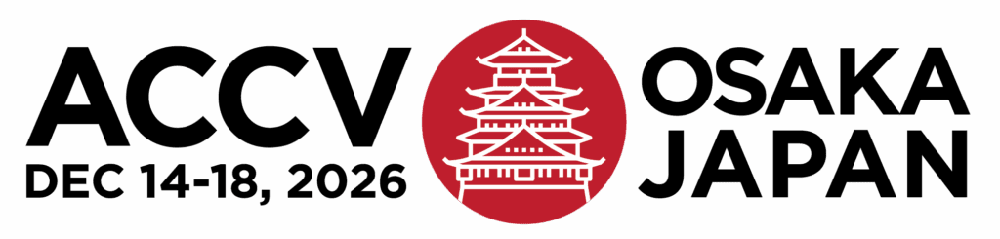
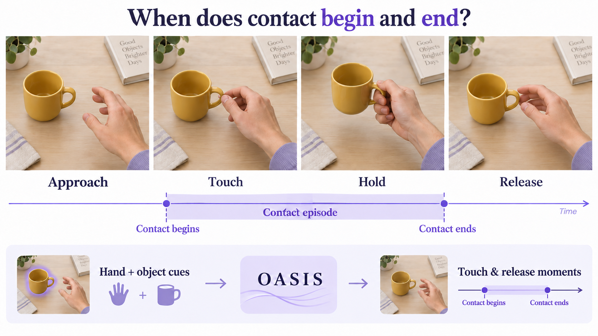
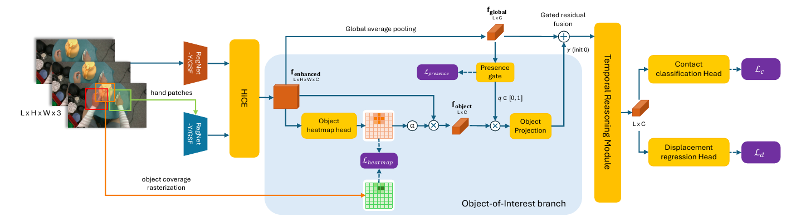
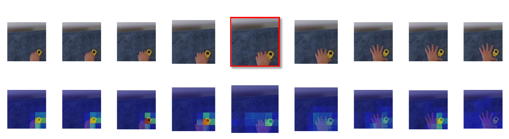

Object-aware representation
A class-agnostic heatmap pools features from interaction-relevant objects. A presence gate controls unreliable object evidence before residual fusion.

Accepted at ACCV 2026
Australian Institute for Machine Learning, Adelaide University

Hand context identifies the interaction. Object evidence helps localize its boundaries.

A class-agnostic heatmap pools features from interaction-relevant objects. A presence gate controls unreliable object evidence before residual fusion.
Touch and release are scored independently against a shared background reference. Separate temporal offsets refine each transition type.
Object annotations supervise training; no external object or hand-object interaction detector is required at inference. The hand-centric backbone uses hand boxes.
Frame-level touch and release annotations, together with object-of-interest supervision.
Learning where to look around a contact transition.

Best overall mAP among the evaluated baselines, both before and after suppression.
Object grounding and separate temporal refinement both contribute to the full model.
On HanDyVQA, adding predicted touch and release scores as temporal context increases Qwen2.5-VL’s average score from 58.01 to 58.49, using the same uniformly sampled frames. Part-level and state reasoning improve, while process reasoning decreases slightly.
@inproceedings{nguyen2026oasis,
title = {Hand-Object Contact Transition Detection in Egocentric Video},
author = {Nguyen, Huy Anh and Dong, Chang and Dayoub, Feras and Hoai, Minh},
booktitle = {Proceedings of the Asian Conference on Computer Vision (ACCV)},
year = {2026}
}